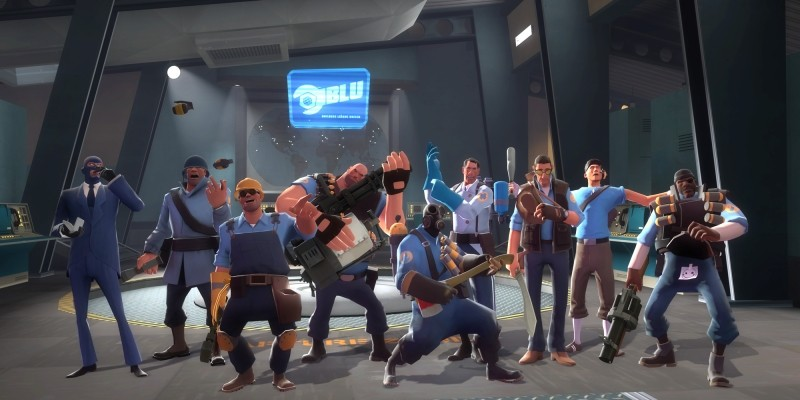

Team Fortress 2 is a team-based first-person shooter multiplayer video game developed and published by Valve Corporation. It is the sequel to the 1996 mod Team Fortress for Quake and its 1999 remake. It was released as part of the video game compilation The Orange Box on October 10, 2007 for Windows and the Xbox 360. A PlayStation 3 version followed on December 11, 2007. On April 8, 2008, it was released as a standalone title for Windows. The game was updated to support OS X on June 10, 2010, and Linux on February 14, 2013. It is distributed online through Valve's download retailer Steam; retail distribution was handled by Electronic Arts.
